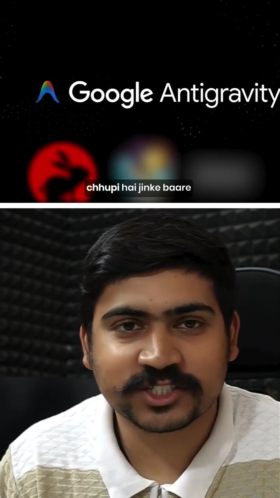
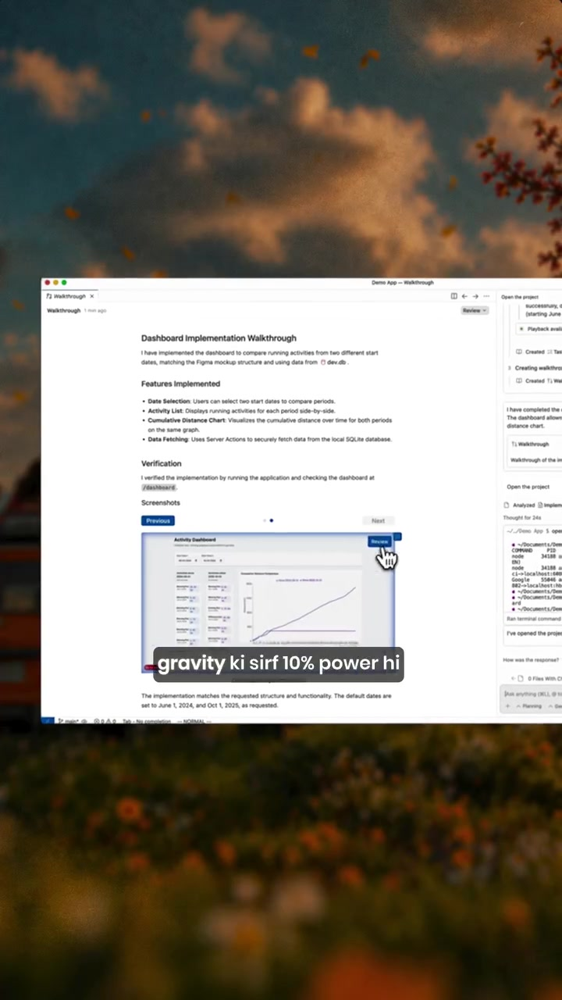
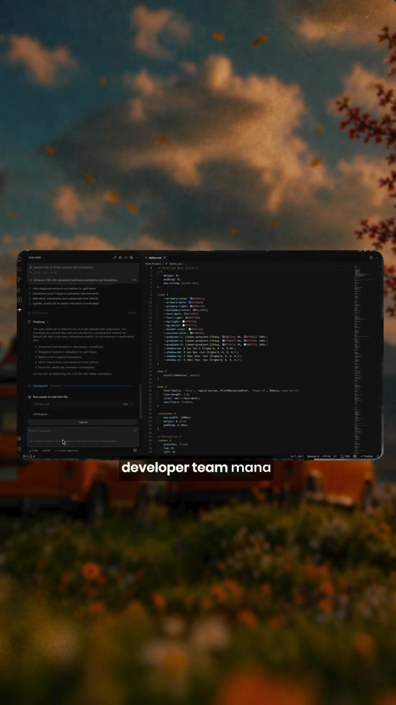

AI · System-Architecture
Google Antigravity: Role Specialist Subagents, Context Persistence & Custom Rules Architecture
Over 90% of developers use autonomous coding environments (like Google Antigravity / AGY) at less than 10% of their actual capability—treating them as single-turn chat autocomplete windows. This architectural breakdown analyzes the four core power primitives in Antigravity: switching into specialist execution modes (Architect, Implementer, Debugger), maintaining persistent cross-session knowledge bases, enforcing repo-specific behavior rules, and executing autonomous verification loops.
Visual Reference Stills



The 4 Antigravity Power Primitives
Instead of one model juggling contradictory priorities, Antigravity delegates work across specialized subagent personas:
- Architect Mode: High-level system design, schema definitions, and non-destructive planning without writing code.
- Code/Implementer Mode: Focused atomic code creation adhering to strict type safety and design systems.
- Debug Mode: Root-cause analysis, memory leak isolation, and test failure reproduction.
In long-horizon engineering tasks, context token limits are reached. Antigravity avoids amnesia through structured Knowledge Items (KI summaries with artifact paths) and persistent conversation logs, allowing seamless resumption without re-reading entire repositories.
Developers define enforceable project constraints via markdown files (AGENTS.md / GEMINI.md) and modular skills/ folders, preventing the AI from introducing banned packages, placeholder code, or unapproved architectural styles.
Antigravity features direct shell execution and headless browser validation subagents, enabling the AI to inspect DOM state, detect console runtime errors, and verify its own UI work autonomously before reporting back to the user.